Playwright | Video thumbnails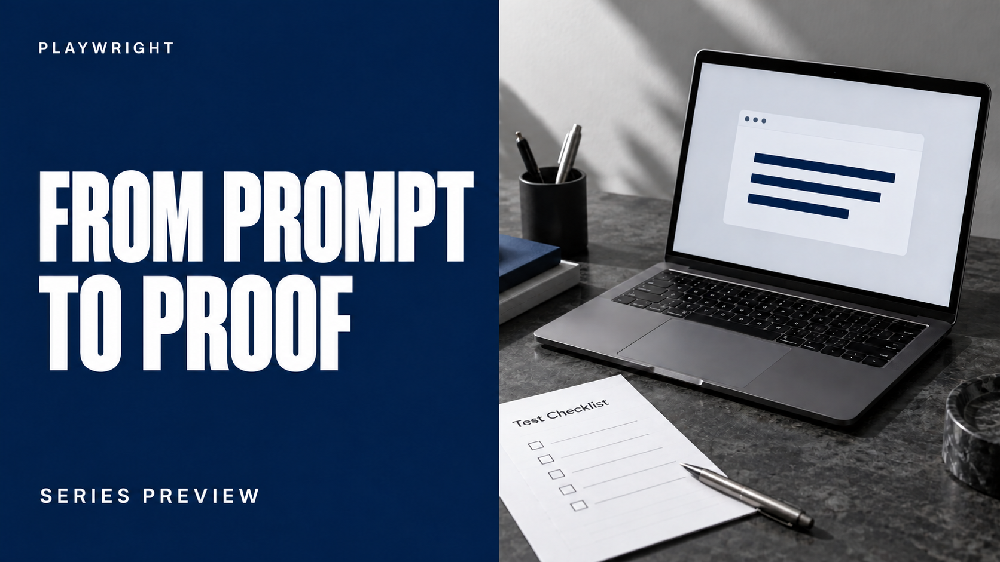
SHOWCASEFrom Prompt to Proof: A Live Lab Walkthrough
Download PNG 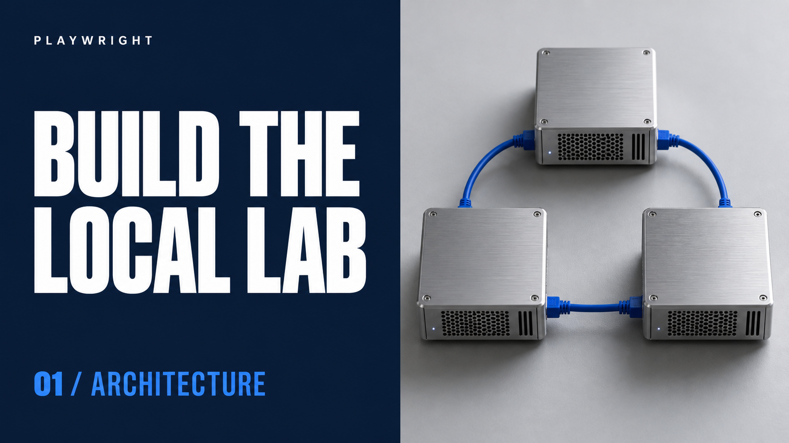
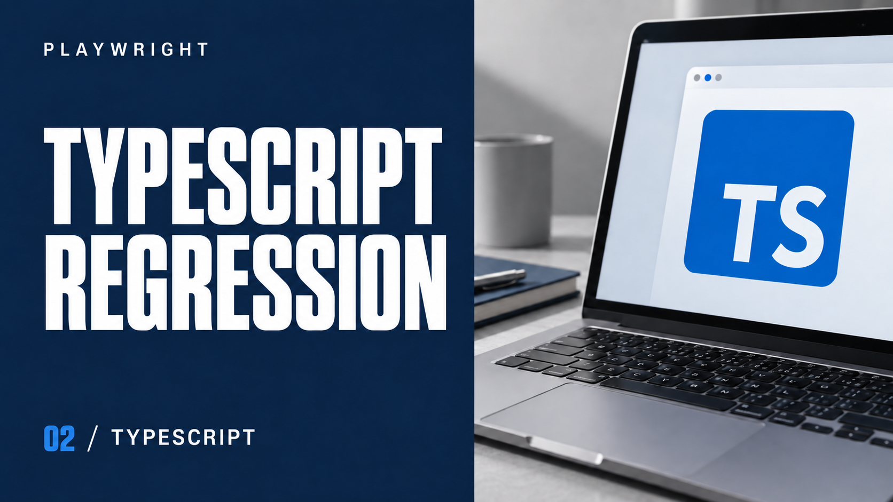
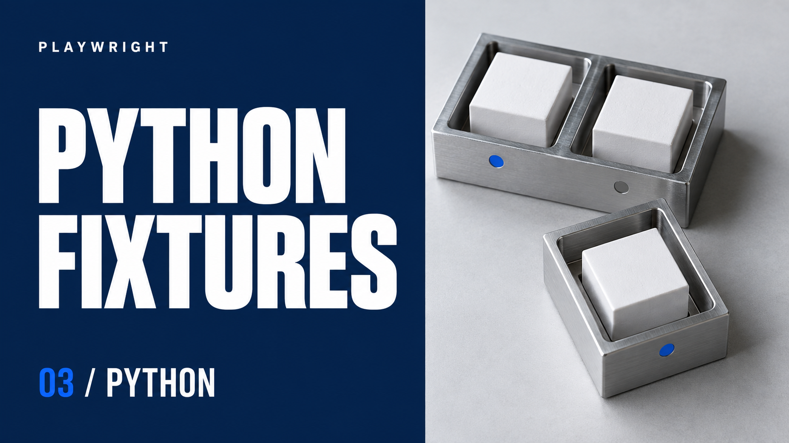
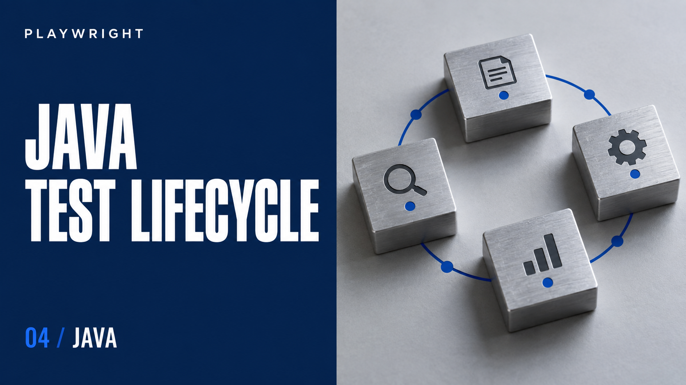
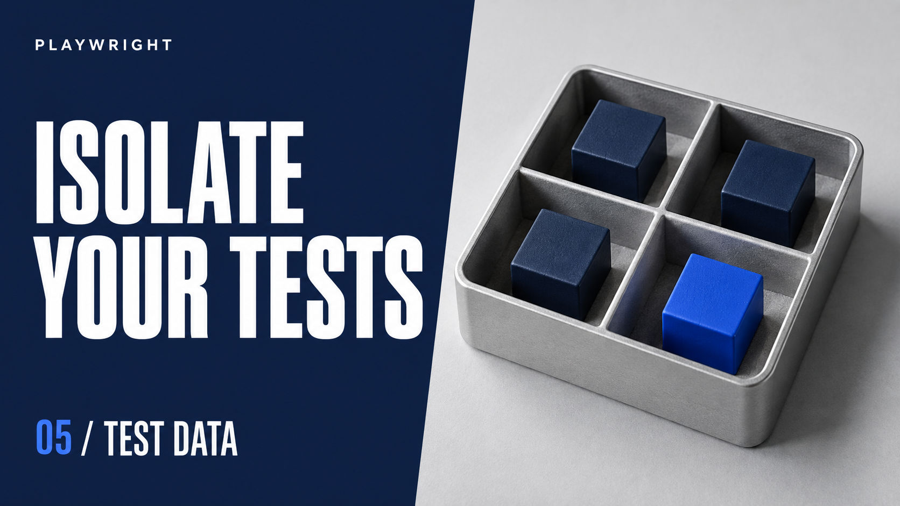
06Distributed Workflows: Correlation and Polling
Download PNG 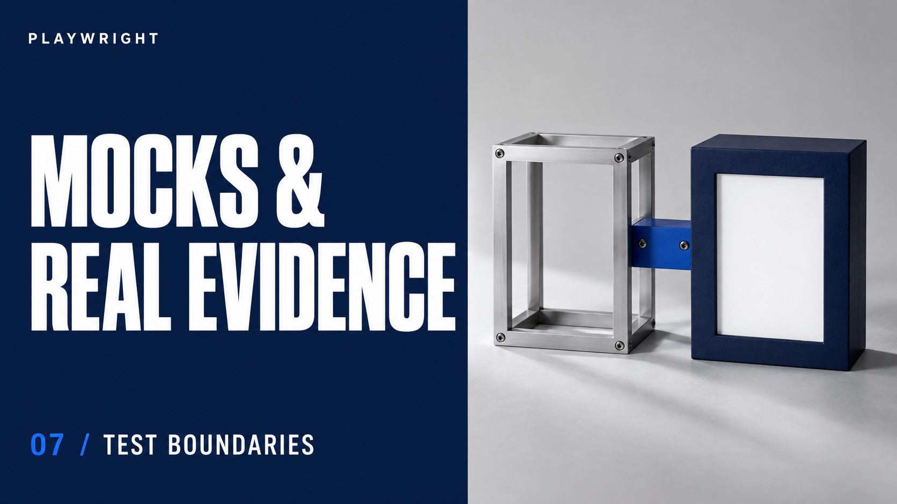
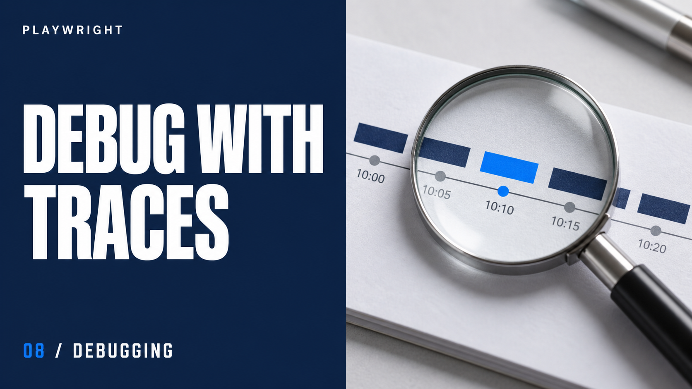
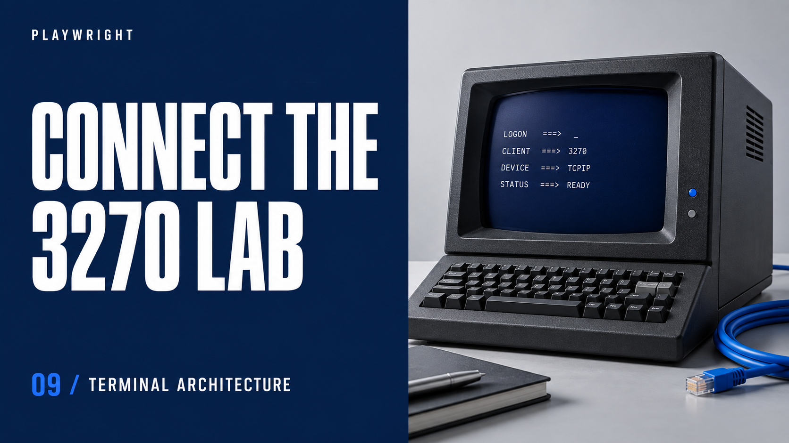
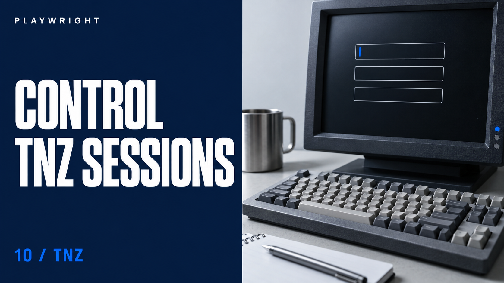
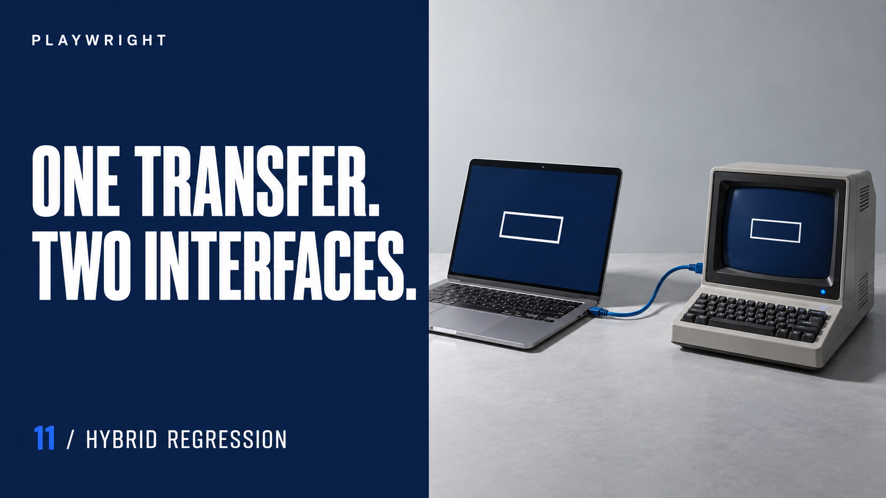
11Hybrid Regression: One Correlation Across Interfaces
Download PNG